import pandas as pd
import numpy as np
import seaborn as sns
import matplotlib.pyplot as plt
from scipy import stats
import statsmodels.api as sm
from statsmodels.formula.api import ols
from statsmodels.stats.multicomp import pairwise_tukeyhsd
# Configuração estética
sns.set_theme(style="whitegrid")
plt.rcParams['figure.figsize'] = (10, 6)
plt.rcParams['font.size'] = 12
# Carregando datasets
penguins = sns.load_dataset('penguins').dropna()
iris = sns.load_dataset('iris')Dia 03 - Distribuições e Testes
Introdução à Estatística com Python
Matheus Pimenta
2026-02-11
Setup Inicial
Carregando Bibliotecas e Dados
Nota
Nota: Removemos valores nulos (dropna) para evitar erros nos cálculos estatísticos.
Parte 1: Variáveis Aleatórias e Distribuições
O Conceito de Variável Aleatória (V.A.)
Definição Matemática: Uma V.A. \(X\) é uma função que mapeia resultados de um espaço amostral \(\Omega\) para os números reais \(\mathbb{R}\).
\[ X: \Omega \rightarrow \mathbb{R} \]
Analogia: Pense na V.A. como uma “lente” ou “instrumento de medição”.
- O pinguim real é o evento físico (\(\omega\)).
- O comprimento da nadadeira (\(x\)) é o número que anotamos.
Tipos de Variáveis Aleatórias
- Discreta:
- O conjunto imagem é contável.
- Exemplos: Contagem de pétalas, número de pinguins, número de ovos.
- Contínua:
- O conjunto imagem é um intervalo real (infinitas possibilidades).
- Exemplos: Peso (g), altura (mm), temperatura (°C).
1. Distribuição Normal (Gaussiana)
A rainha das distribuições contínuas. Surge naturalmente em fenômenos biológicos devido ao Teorema Central do Limite.
PDF (Função Densidade de Probabilidade)
\[ f(x) = \frac{1}{\sigma \sqrt{2\pi}} \, e^{-\frac{1}{2}\left(\frac{x-\mu}{\sigma}\right)^2} \]
Parâmetros
- \(\mu\): média (localização / centro)
- \(\sigma\): desvio padrão (escala / largura)
Verificação Prática: Pinguins Adelie
Vamos verificar se o comprimento da nadadeira (flipper_length_mm) segue uma normal.
Estratégia: Sobrepor a curva teórica (matemática) ao histograma empírico (dados).
# 1. Selecionar dados (apenas da espécie Adelie para evitar bimodalidade)
dados_adelie = penguins[penguins['species'] == 'Adelie']['flipper_length_mm']
media_empirica, desvio_empirico = dados_adelie.mean(), dados_adelie.std()
print(f"Média Empírica: {media_empirica:.2f}, Desvio Padrão Empírico: {desvio_empirico:.2f}")
# 2. Estimar parâmetros (Máxima Verossimilhança)
mu, sigma = stats.norm.fit(dados_adelie)
print(f"Média estimada: {mu:.2f}, Desvio Padrão: {sigma:.2f}")
# 3. Gerar pontos para a curva teórica
x = np.linspace(dados_adelie.min(), dados_adelie.max(), 100)
pdf_teorica = stats.norm.pdf(x, loc=mu, scale=sigma)
# 4. Plotagem
plt.figure(figsize=(10, 5))
# Histograma (density=True é CRUCIAL para comparar com a PDF)
sns.histplot(dados_adelie, stat="density", kde=False, label="Dados Empíricos", color="skyblue")
# Curva Teórica
plt.plot(x,pdf_teorica,'r-',lw=3,label=rf'Normal Teórica ($\mu={mu:.1f}, \sigma={sigma:.1f}$)')
plt.title('Ajuste da Distribuição Normal: Nadadeira (Adelie)')
plt.legend()
plt.show()Média Empírica: 190.10, Desvio Padrão Empírico: 6.52
Média estimada: 190.10, Desvio Padrão: 6.50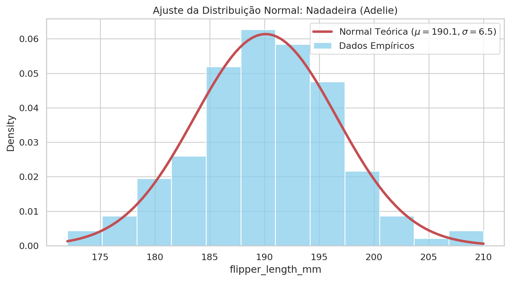
Interpretando a Densidade
Atenção Conceitual
Em V.A. contínuas, a probabilidade de um valor exato é zero: \(P(X = x) = 0\). A probabilidade é dada pela área sob a curva.
A função pdf retorna a altura da curva, não a probabilidade direta. Para probabilidades, usamos integrais (áreas).
Exercício Prático: Probabilidade Acumulada
Qual a probabilidade de encontrarmos um pinguim Adélia com nadadeira menor que 185 mm?
\[ P(X < 185) = \int_{-\infty}^{185} f(x)\,dx \]
No Python, usamos a CDF (Cumulative Distribution Function).
Probabilidade teórica (P < 185mm): 21.62%
Frequência nos dados reais: 18.49%# Gráfico indicando a área sob a curva
plt.figure(figsize=(10, 5))
sns.histplot(dados_adelie, stat="density", kde=False, label="Dados Empíricos", color="skyblue")
plt.plot(x, pdf_teorica, 'r-', lw=3, label=rf'Normal Teórica ($\mu={mu:.1f}, \sigma={sigma:.1f}$)')
plt.fill_between(x, 0, pdf_teorica, where=(x < 185), color='orange', alpha=0.5, label='Área P(X < 185mm)')
plt.title('Área sob a Curva para P(X < 185mm)')
plt.legend()
plt.show()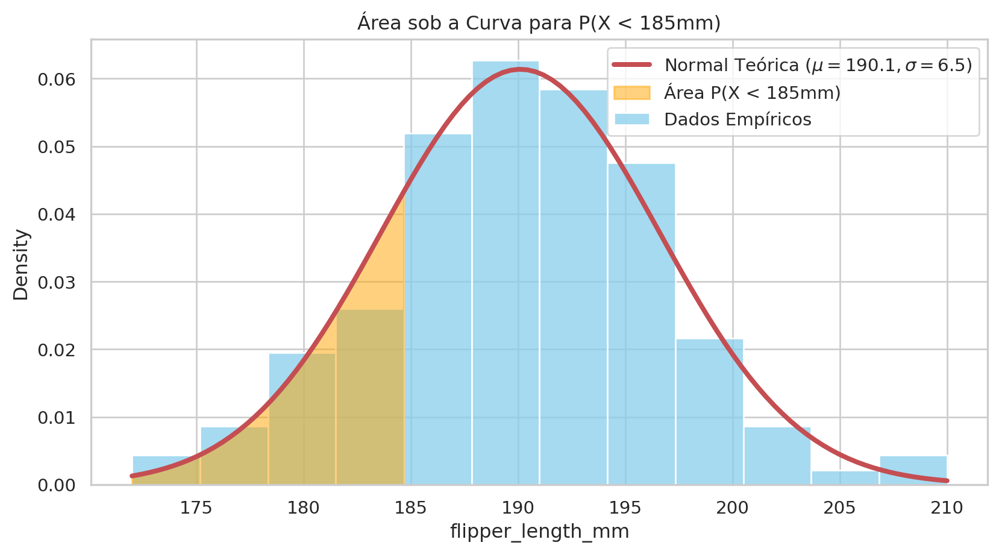
2. Distribuição Binomial
Modelagem de sucessos em \(n\) tentativas independentes (Bernoulli).
PMF (Função de Massa de Probabilidade)
\[ P(X = k) = \binom{n}{k} p^k (1-p)^{n-k} \]
Parâmetros:
- \(n\): número de tentativas
- \(p\): probabilidade de sucesso em uma tentativa
- \(k\): número de sucessos observados
Contexto Binomial
Imagine que a prevalência de pinguins da espécie Gentoo na ilha é conhecida (\(p\)).
Se capturarmos 10 pinguins ao acaso (\(n = 10\)), qual a probabilidade de exatamente 3 serem Gentoo?
Vamos simular isso.
Simulando a Binomial
# 1. Definir parâmetros
n_tentativas = 10 # Tamanho da amostra que vamos coletar
# Probabilidade 'p' real baseada no dataset ("População da Ilha")
p_gentoo = (penguins['species'] == 'Gentoo').mean()
print(f"Probabilidade de ser Gentoo (p): {p_gentoo:.3f}")
# 2. Gerar a distribuição teórica para k sucessos (0 a 10)
k_values = np.arange(0, n_tentativas + 1)
prob_binom = stats.binom.pmf(k_values, n=n_tentativas, p=p_gentoo)
# 3. Visualização
plt.figure(figsize=(10, 5))
plt.bar(k_values, prob_binom, color='lightgreen', edgecolor='black', alpha=0.7)
plt.title(f'Distribuição Binomial (n={n_tentativas}, p={p_gentoo:.2f}) - Captura de Gentoos')
plt.xlabel('Número de Pinguins Gentoo encontrados')
plt.ylabel('Probabilidade')
plt.xticks(k_values)
plt.show()Simulando a Binomial
Probabilidade de ser Gentoo (p): 0.357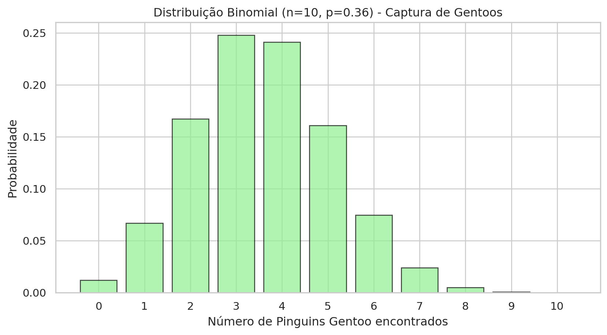
3. Distribuição de Poisson
Modelagem de eventos raros ou contagens em um intervalo de tempo/espaço fixo.
PMF & Propriedade
\[ P(X = k) = \frac{\lambda^k e^{-\lambda}}{k!} \]
- \(\lambda\): taxa média de ocorrência no intervalo.
- Propriedade-chave: Média e Variância são similares. \[ \mu \approx \sigma^2 \]
Poisson: Contexto
Suponha que, historicamente, encontramos uma média de 2 pinguins com peso muito baixo (<3000 g) por dia de expedição. Qual a probabilidade de hoje encontrarmos 5?
# 1. Parâmetro Lambda
lambda_pinguins = 2 # Média esperada
# 2. Calcular probabilidades
k_ocorr = np.arange(0, 10)
prob_poisson = stats.poisson.pmf(k_ocorr, mu=lambda_pinguins)
# 3. Visualização
plt.figure(figsize=(10, 5))
plt.plot(k_ocorr, prob_poisson, 'o-', color='purple', label='Poisson PMF')
plt.vlines(k_ocorr, 0, prob_poisson, colors='purple', lw=2, alpha=0.5)
plt.title(f'Poisson ($\\lambda={lambda_pinguins}$)')
plt.xlabel('Nº Pinguins (baixo peso)')
plt.ylabel('Probabilidade')
plt.legend()
plt.show()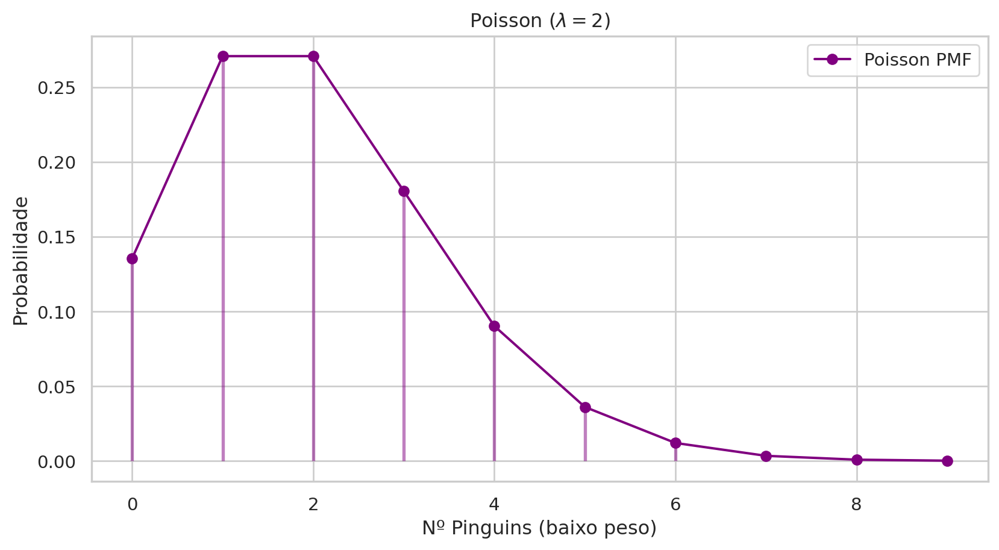
4. Distribuição t de Student
Quando trabalhamos com amostras pequenas (\(n < 30\)) ou não conhecemos o desvio padrão populacional (\(\sigma\)), a incerteza aumenta.
A Distribuição Normal subestima essa incerteza (caudas muito finas). Para corrigir isso, usamos a t de Student.
Características:
- Similar à Normal (forma de sino, simétrica em zero).
- Caudas mais pesadas (fat tails): maior probabilidade de valores extremos.
- Controlada pelos Graus de Liberdade (\(df = n - 1\)).
Curiosidade
Criada por William Gosset enquanto trabalhava na cervejaria Guinness, para lidar com pequenas amostras de cevada. Publicou sob o pseudônimo “Student”.
Visualizando: Normal vs t de Student
Quanto menor o \(df\), mais “achatada” a curva e mais “gordas” as caudas. Conforme \(n \to \infty\), a t converge para a Normal.
x = np.linspace(-4, 4, 200)
plt.figure(figsize=(10, 5))
# 1. Normal Padrão (Referência)
plt.plot(x, stats.norm.pdf(x), 'k--', lw=2, label='Normal Padrão (Z)')
# 2. Distribuições t com diferentes graus de liberdade
plt.plot(x, stats.t.pdf(x, df=2), color='red', lw=2, alpha=0.7, label='t-Student (df=2)')
plt.plot(x, stats.t.pdf(x, df=10), color='blue', lw=2, alpha=0.7, label='t-Student (df=10)')
plt.title('Comparação: A Influência dos Graus de Liberdade')
plt.legend()
plt.fill_between(x, stats.t.pdf(x, df=2), stats.norm.pdf(x),
where=(np.abs(x)>2), color='red', alpha=0.2, label='Incerteza Extra (Caudas)')
plt.ylabel('Densidade de Probabilidade')
plt.show()Visualizando: Normal vs t de Student
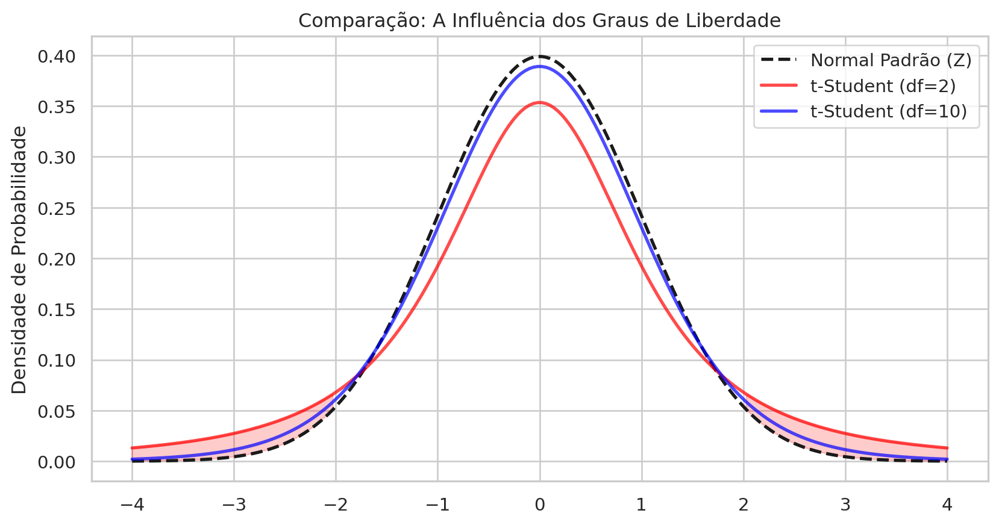
Resumo das Distribuições
| Distribuição | Tipo | Parâmetros Chave | Exemplo Biológico |
|---|---|---|---|
| Normal | Contínua | \(\mu, \sigma\) | Altura, Peso, Comprimento |
| t-Student | Contínua | \(\nu\) (gl) | Comparação de médias (\(n < 30\)) |
| Binomial | Discreta | \(n, p\) | Nº de doentes em 10 pacientes |
| Poisson | Discreta | \(\lambda\) | Nº de mutações por gene |
Dica do Professor
Na prática, raramente sabemos os parâmetros reais \((\mu, \sigma, p)\). A Estatística Inferencial serve justamente para estimar esses parâmetros a partir da amostra e testar diferenças entre grupos.
Parte 2: A Lógica da Inferência
O Problema da Indução
Na estatística, raramente temos acesso à População inteira (\(\Omega\)). Temos apenas uma Amostra (\(S \subset \Omega\)).
Objetivo: Tomar decisões sobre parâmetros desconhecidos da população (ex.: \(\mu\), \(\sigma^2\)), baseando-se apenas na amostra, quantificando a incerteza.
A ferramenta para isso é o Teste de Hipóteses.
Estrutura do Teste de Hipóteses
O teste é uma prova por contradição probabilística.
Hipótese Nula (\(H_0\)):
- O “status quo”. Assume-se que não há efeito, não há diferença ou que o acaso explica os resultados.
- Ex: \(\mu_{\text{Adelie}} = \mu_{\text{Chinstrap}}\)
Hipótese Alternativa (\(H_1\) ou \(H_a\)):
- É o efeito ou diferença que o pesquisador quer demonstrar.
- Ex: \(\mu_{\text{Adelie}} \neq \mu_{\text{Chinstrap}}\)
Erros de Decisão
Como a decisão é baseada em probabilidades, podemos errar.
| Realidade / Decisão | Rejeitar \(H_0\) | Não Rejeitar \(H_0\) |
|---|---|---|
| \(H_0\) é verdadeira | Erro Tipo I (\(\alpha\)) (Falso Positivo) |
Decisão correta \((1-\alpha)\) |
| \(H_0\) é falsa | Decisão correta \((1-\beta)\) – Poder |
Erro Tipo II (\(\beta\)) (Falso Negativo) |
Nível de significância (\(\alpha\)): probabilidade máxima de cometer um Erro Tipo I (usualmente \(0.05\)).
O P-valor (P-value)
Definição rigorosa
\[ P(T \ge t_{\text{obs}} \mid H_0 \text{ é verdadeira}) \]
Interpretação prática:
- Se \(p < \alpha\) \(\rightarrow\) o evento é raro sob \(H_0\) \(\rightarrow\) Rejeitamos \(H_0\).
- Se \(p \ge \alpha\) \(\rightarrow\) “Falhamos em rejeitar” \(H_0\).
Nunca dizemos que “aceitamos \(H_0\)”, apenas que não temos evidência para rejeitá-la.
Graficamente
Nível de significância.

Nível de Significância Alpha
Estudo de Caso: Comparação de Médias (Teste t)
Pergunta de pesquisa: Existe diferença significativa no comprimento do bico (bill_length_mm) entre Adelie e Chinstrap?
Hipóteses:
\[ H_0: \mu_{\text{Adelie}} = \mu_{\text{Chinstrap}} \] \[ H_1: \mu_{\text{Adelie}} \neq \mu_{\text{Chinstrap}} \]
1. Análise Exploratória Visual
Antes de qualquer teste, olhe os dados.
# Filtrando os dados
adelie = penguins[penguins['species'] == 'Adelie']['bill_length_mm']
chinstrap = penguins[penguins['species'] == 'Chinstrap']['bill_length_mm']
plt.figure(figsize=(10, 6))
# Boxplot para comparar centro e dispersão
sns.boxplot(
x='species', y='bill_length_mm', hue='species',
data=penguins[penguins['species'].isin(['Adelie', 'Chinstrap'])],
palette="Set2"
)
# Swarmplot para ver pontos individuais
sns.swarmplot(
x='species', y='bill_length_mm', hue='species',
data=penguins[penguins['species'].isin(['Adelie', 'Chinstrap'])],
palette='dark:.25', alpha=0.5
)
plt.title('Comprimento do Bico: Adelie vs Chinstrap')
plt.show()1. Análise Exploratória Visual
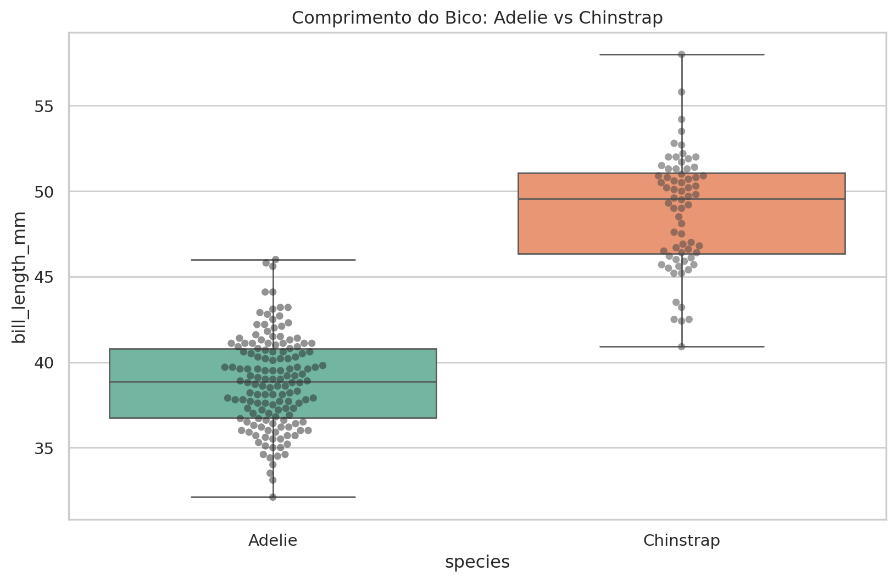
# Histogramas sobrepostos
plt.figure(figsize=(10, 6))
sns.histplot(adelie, color='blue', label='Adelie', stat='density', kde=True, alpha=0.6)
sns.histplot(chinstrap, color='orange', label='Chinstrap', stat='density', kde=True, alpha=0.6)
plt.title('Distribuição do Comprimento do Bico: Adelie vs Chinstrap')
plt.legend()
plt.show()
2. Verificação de Pressupostos
O Teste t de Student (paramétrico) assume:
- Independência: observações independentes (desenho amostral).
- Normalidade: médias amostrais seguem normal (TCL) ou dados normais (\(n < 30\)).
- Homocedasticidade: variâncias iguais.
Teste de Normalidade (Shapiro–Wilk)
\[ H_0: \text{Os dados seguem uma distribuição Normal.} \]
# Testando normalidade para cada grupo
stat_ad, p_ad = stats.shapiro(adelie)
stat_ch, p_ch = stats.shapiro(chinstrap)
print(f"Shapiro-Wilk Adelie: p={p_ad:.4f}")
print(f"Shapiro-Wilk Chinstrap: p={p_ch:.4f}")
if p_ad > 0.05 and p_ch > 0.05:
print("Assumimos normalidade em ambos os grupos.")
else:
print("Alerta: Desvio da normalidade detectado.")Shapiro-Wilk Adelie: p=0.6848
Shapiro-Wilk Chinstrap: p=0.1941
Assumimos normalidade em ambos os grupos.Visualizando a Normalidade (QQ-Plot)
Compara quantis dos dados vs quantis teóricos. Se os pontos caem na diagonal, é normal.
3. Execução do Teste t (Independente)
Como estamos comparando dois grupos distintos, usamos ttest_ind.
Variâncias Diferentes?
Se as variâncias não forem iguais, usamos equal_var=False. Isso ativa o Teste de Welch, mais robusto para heterocedasticidade.
# Teste de Levene para igualdade de variâncias
stat_lev, p_lev = stats.levene(adelie, chinstrap)
print(f"Teste de Levene (Homocedasticidade): p={p_lev:.4f}")
equal_var = p_lev > 0.05 # Se p > 0.05, variâncias iguais
# Teste T
t_stat, p_val = stats.ttest_ind(adelie, chinstrap, equal_var=equal_var)
print(f"\nResultados do Teste T:")
print(f"Estatística t: {t_stat:.4f}")
print(f"P-valor: {p_val:.2e}")Teste de Levene (Homocedasticidade): p=0.0345
Resultados do Teste T:
Estatística t: -21.7125
P-valor: 3.15e-414. Interpretação dos Resultados
alpha = 0.05
print(f"Média Adelie: {adelie.mean():.2f} mm | Média Chinstrap: {chinstrap.mean():.2f} mm")
print(f"Diferença: {chinstrap.mean() - adelie.mean():.2f} mm")
if p_val < alpha:
print("Conclusão: REJEITAMOS H0.")
print("Há evidência estatística de diferença significativa entre as médias.")
else:
print("Conclusão: FALHAMOS em rejeitar H0.")
print("Não há evidência suficiente para afirmar diferença entre as médias.")Média Adelie: 38.82 mm | Média Chinstrap: 48.83 mm
Diferença: 10.01 mm
Conclusão: REJEITAMOS H0.
Há evidência estatística de diferença significativa entre as médias.Nota
Um p-valor muito baixo (ex: \(10^{-10}\)) indica que a diferença é extremamente improvável de ocorrer por acaso.
dados = penguins[penguins['species'].isin(['Adelie', 'Chinstrap'])]
plt.figure(figsize=(10, 6))
# Boxplot
sns.boxplot(x='species',y='bill_length_mm',hue='species',data=dados,palette='Set2',showmeans=True,legend=False)
# Pontos individuais
sns.swarmplot(x='species',y='bill_length_mm',data=dados,color='0.25',alpha=0.6)
# Altura da anotação (um pouco acima do maior valor)
y_max = dados['bill_length_mm'].max()
y_min = dados['bill_length_mm'].min()
altura = y_max + 0.05 * (y_max - y_min)
# Posições no eixo x (Adelie = 0, Chinstrap = 1)
x1, x2 = 0, 1
# Linha horizontal
plt.plot([x1, x1, x2, x2],[altura - 0.3, altura, altura, altura - 0.3],lw=1.5, color='black')
# Texto do p-valor
if p_val < 0.001:
texto_p = "p < 0.001"
elif p_val < 0.01:
texto_p = "p < 0.01"
elif p_val < 0.05:
texto_p = "p < 0.05"
else:
texto_p = f"p = {p_val:.2f}"
plt.text((x1 + x2) / 2,altura + 0.2,texto_p,ha='center',va='bottom',fontsize=12)
plt.title('Comprimento do Bico: Adelie vs Chinstrap\n(Teste t de Student)')
plt.xlabel('Espécie')
plt.ylabel('Comprimento do Bico (mm)')
plt.tight_layout()
plt.show()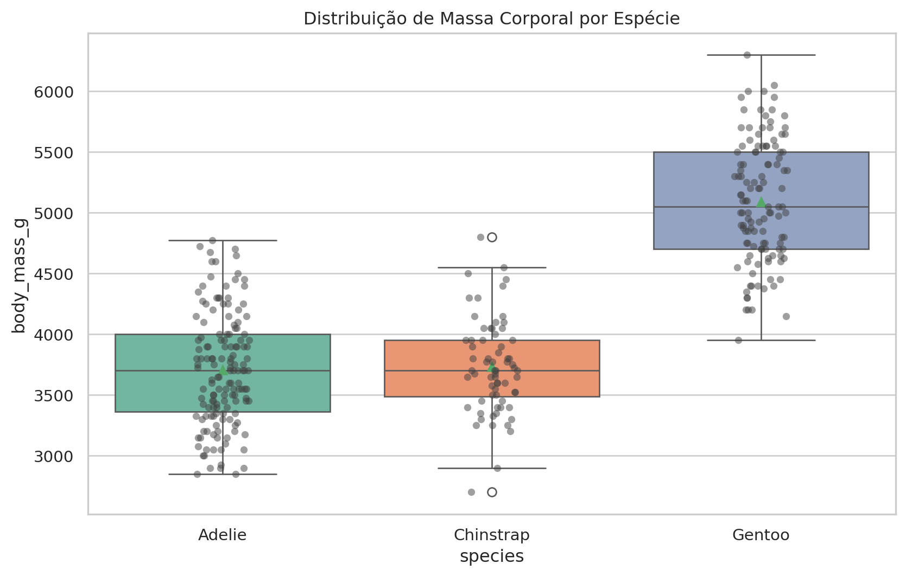
Parte 3: Comparando Múltiplos Grupos
O Problema das Múltiplas Comparações
Se temos 3 espécies (Adelie, Chinstrap, Gentoo), por que não fazer 3 Testes t?
- Adelie vs Chinstrap
- Adelie vs Gentoo
- Chinstrap vs Gentoo
A Inflação do Erro Tipo I
Se cada teste tem \(\alpha = 0.05\), a probabilidade de não errar em um teste é \(0.95\). Para 3 testes: \(0.95^3 \approx 0.857\).
Chance de cometer pelo menos um erro: \[ 1 - 0.857 = 14.3\% \]
A ANOVA resolve isso testando todos simultaneamente.
A Lógica da ANOVA (F-Test)
A Análise de Variância decompõe a variação total em:
- Between Groups (Sinal): Diferença das médias dos grupos em relação à média geral.
- Within Groups (Ruído): Dispersão interna de cada grupo.
\[ F = \frac{\text{Variância Entre Grupos}}{\text{Variância Dentro dos Grupos}} \]
Hipóteses: \[ H_0: \mu_1 = \mu_2 = \mu_3 \] \[ H_1: \exists\, i,j \text{ tal que } \mu_i \neq \mu_j \]
Estudo de Caso: Tamanho da Nadadeira
Pergunta: Existe diferença significativa no tamanho da nadadeira (flipper_length_mm) entre as três espécies?
plt.figure(figsize=(10, 6))
sns.boxplot(
x='species', y='flipper_length_mm', hue='species',
data=penguins, palette="Set2", showmeans=True
)
sns.stripplot(
x='species', y='flipper_length_mm',
data=penguins, color=".25",
alpha=0.5, jitter=True
)
plt.title('Distribuição do Tamanho da Nadadeira por Espécie')
plt.show()Estudo de Caso: Tamanho da Nadadeira
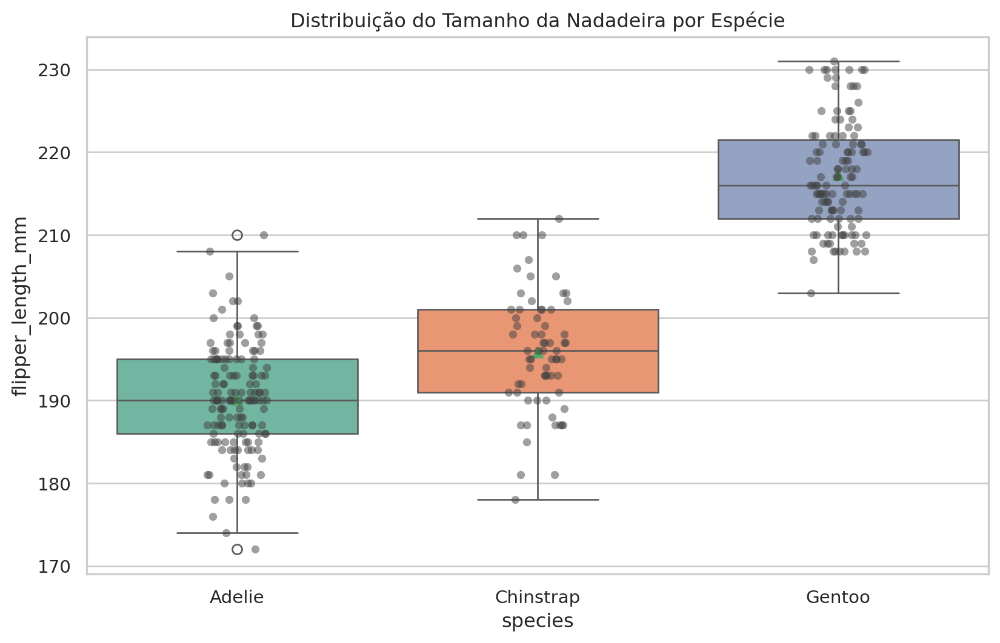
2. Construindo o Modelo (OLS)
Usaremos statsmodels. Sintaxe: flipper_length_mm ~ species (“Tamanho da nadadeira explicado pela espécie”).
sum_sq df F PR(>F)
species 50525.883615 2.0 567.406992 1.587418e-107
Residual 14692.753022 330.0 NaN NaNInterpretação: Observe a coluna PR(>F). Se \(p < 0.05\), rejeitamos \(H_0\) (existe diferença significativa).
3. Verificação de Pressupostos (Rigorosa)
A ANOVA assume que os resíduos do modelo são:
- Normais
- Homocedásticos
Aviso
Não testamos os dados brutos, mas sim os resíduos, pois a ANOVA avalia a adequação do modelo.
Diagnóstico de Resíduos
residuos = modelo_anova.resid
# 1. Normalidade dos Resíduos (Shapiro-Wilk)
stat_sw, p_sw = stats.shapiro(residuos)
print(f"Shapiro-Wilk nos Resíduos: p={p_sw:.4f}")
# 2. Homocedasticidade (Levene)
stat_lev, p_lev = stats.levene(
penguins[penguins['species'] == 'Adelie']['flipper_length_mm'],
penguins[penguins['species'] == 'Chinstrap']['flipper_length_mm'],
penguins[penguins['species'] == 'Gentoo']['flipper_length_mm']
)
print(f"Teste de Levene: p={p_lev:.4f}")
# Visualização
fig, ax = plt.subplots(1, 2, figsize=(12, 5))
sns.histplot(residuos, kde=True, ax=ax[0], color='gray')
ax[0].set_title("Histograma dos Resíduos")
sm.qqplot(residuos, line='45', fit=True, ax=ax[1])
ax[1].set_title("QQ-Plot dos Resíduos")
plt.show()Shapiro-Wilk nos Resíduos: p=0.2778
Teste de Levene: p=0.6426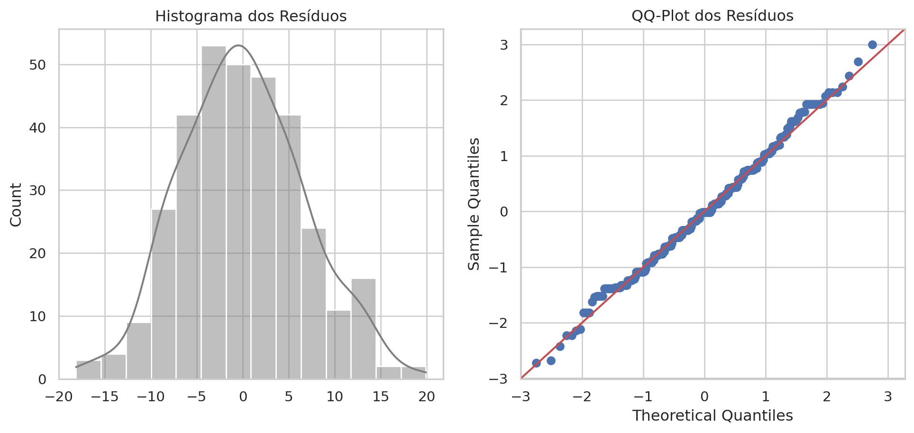
Robustez da ANOVA
Em dados biológicos reais:
- Pequenos desvios de normalidade são comuns.
- A ANOVA é robusta a isso.
- É menos robusta a heterocedasticidade (variâncias diferentes).
Se Levene for significativo, recomenda-se:
- ANOVA de Welch
- Teste não-paramétrico (Kruskal-Wallis)
4. Post-Hoc: Tukey HSD
A ANOVA disse “há diferença”, mas onde? O teste de Tukey (Honestly Significant Difference) compara par a par, ajustando o p-valor.
Multiple Comparison of Means - Tukey HSD, FWER=0.05
=========================================================
group1 group2 meandiff p-adj lower upper reject
---------------------------------------------------------
Adelie Chinstrap 5.7208 0.0 3.4144 8.0272 True
Adelie Gentoo 27.1326 0.0 25.1924 29.0727 True
Chinstrap Gentoo 21.4118 0.0 19.0236 23.7999 True
---------------------------------------------------------reject=True: Diferença significativa. meandiff: Tamanho da diferença.
Visualizando Intervalos de Confiança (Tukey)
Se o intervalo não cruza a linha pontilhada (zero), a diferença é significativa.
tukey_df = pd.DataFrame(tukey._results_table.data[1:],columns=tukey._results_table.data[0])
# Criar rótulo da comparação
tukey_df['comparacao'] = tukey_df['group1'] + " vs " + tukey_df['group2']
# Converter colunas numéricas
for col in ['meandiff', 'lower', 'upper']:
tukey_df[col] = tukey_df[col].astype(float)
# 2. Plotagem dos Intervalos de Confiança
plt.figure(figsize=(10, 5))
y_pos = range(len(tukey_df))
for i, row in tukey_df.iterrows():
# Define cor baseada na significância
if row['reject']:
cor = 'tab:blue' # significativo
else:
cor = 'tab:gray' # não significativo
# Intervalo de confiança
plt.plot([row['lower'], row['upper']],[i, i],color=cor,linewidth=3)
# Ponto da diferença média
plt.plot(row['meandiff'],i,'o',color=cor)
# Linha vertical no zero (referência)
plt.axvline(x=0,color='black',linestyle='--',linewidth=1)
# Configurações dos eixos
plt.yticks(y_pos, tukey_df['comparacao'])
plt.xlabel('Diferença Média do tamanho da nadadeira (mm)')
plt.ylabel('Comparação entre Espécies')
plt.title(
'Teste de Tukey – Comparações Par-a-Par (95% IC)\n'
'Intervalos que NÃO cruzam o zero indicam diferença significativa'
)
# Legenda manual
plt.text(0.53, 0.1,
"Interpretação:\n"
"• Linha cruza o zero → diferença NÃO significativa\n"
"• Linha NÃO cruza o zero → diferença significativa",
transform=plt.gca().transAxes,fontsize=10,va='bottom',bbox=dict(boxstyle="round", facecolor="white", alpha=0.9))
plt.grid(axis='x', linestyle=':', alpha=0.6)
plt.tight_layout()
plt.show()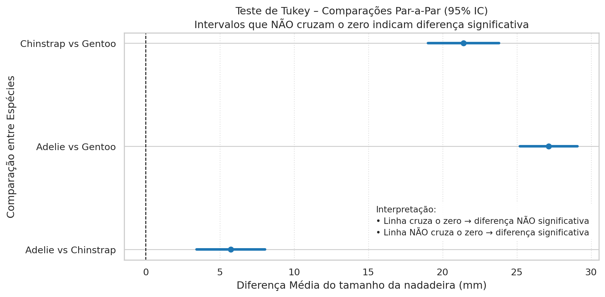
# Preparando os dados
species = ['Adelie', 'Chinstrap', 'Gentoo']
data_groups = [penguins[penguins['species'] == s]['flipper_length_mm'] for s in species]
# Configuração do gráfico
plt.figure(figsize=(10, 7))
ax = sns.boxplot(
x='species', y='flipper_length_mm', hue='species',
data=penguins, palette="Set2", showmeans=True, legend=False
)
sns.stripplot(x='species', y='flipper_length_mm', data=penguins, color=".25", alpha=0.5, jitter=True)
# Função auxiliar para desenhar a barra de significância
def annotate_significance(x1, x2, y, p_value):
h = 3 # altura da barra (bracket)
col = 'k' if p_value < 0.05 else 'gray'
# Desenha a linha
plt.plot([x1, x1, x2, x2], [y, y+h, y+h, y], lw=1.5, c=col)
# Define o texto (* ou n.s.)
if p_value < 0.001: text = "***"
elif p_value < 0.01: text = "**"
elif p_value < 0.05: text = "*"
else: text = "n.s."
plt.text((x1+x2)*.5, y+h, text, ha='center', va='bottom', color=col, fontsize=12)
# Definindo alturas para não sobrepor as barras
y_max = penguins['flipper_length_mm'].max() + 10
h_step = 12
# Comparações manuais (t-test independente)
# 1. Adelie (0) vs Chinstrap (1)
stat, p1 = stats.ttest_ind(data_groups[0], data_groups[1])
annotate_significance(0, 1, y_max, p1)
# 2. Chinstrap (1) vs Gentoo (2)
stat, p2 = stats.ttest_ind(data_groups[1], data_groups[2])
annotate_significance(1, 2, y_max, p2)
# 3. Adelie (0) vs Gentoo (2) - Barra mais alta
stat, p3 = stats.ttest_ind(data_groups[0], data_groups[2])
annotate_significance(0, 2, y_max + h_step, p3)
# Ajuste do eixo Y para caber as anotações
plt.ylim(penguins['flipper_length_mm'].min() - 20, y_max + h_step + 50)
plt.title('Tamanho da Nadadeira: Comparações Estatísticas', fontsize=14)
plt.show()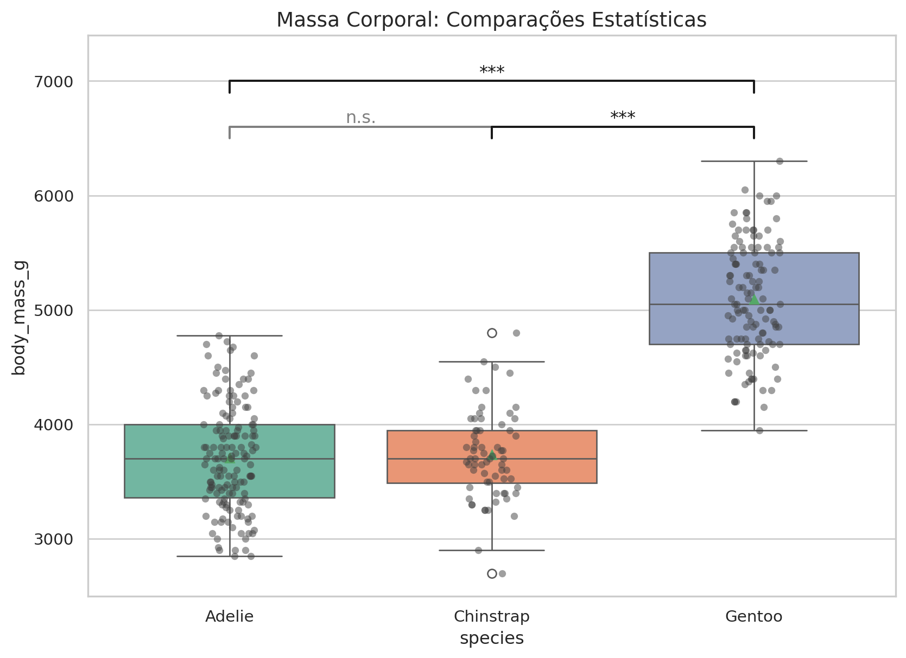
Resumo da Aula: O Que Aprendemos?
1. Distribuições
- Normal: A base de tudo (\(\mu, \sigma\))
- t-Student: Vital para amostras pequenas e variância desconhecida
(caudas pesadas) - Discretas:
- Binomial (sucesso/fracasso)
- Poisson (contagens)
- Binomial (sucesso/fracasso)
2. Inferência
- Hipóteses:
- \(H_0\) — Status Quo
- \(H_1\) — Efeito
- \(H_0\) — Status Quo
- P-valor:
- Se \(p < \alpha\) (0.05) → Rejeitamos \(H_0\)
- Erro Tipo I:
- Falso positivo, controlado por \(\alpha\)
Testes e Ferramentas
3. Testes Estatísticos
- 2 Grupos: Teste t (Student ou Welch)
- 3+ Grupos: ANOVA (F-test)
- Post-hoc: Tukey
→ identifica quem difere de quem
4. Toolkit Python
scipy.stats: Distribuições:.pdf,.cdfe Testes:ttest,shapirostatsmodels:ols, ANOVAseaborn: Boxplot + Swarmplot
Dica
Fluxo:
Visualizar (EDA) → Checar pressupostos → Rodar o teste → Interpretar o tamanho do efeito
Desafio Prático: Iris Dataset
Sua Vez!
Pergunta: O comprimento da pétala (petal_length) varia significativamente entre as espécies de Iris (setosa, versicolor, virginica)?
Roteiro:
- Aplique a ANOVA.
- Verifique os resíduos.
- Se significativo, faça o teste de Tukey.